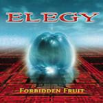

|
|
||
Elegy : Forbidden Fruit (2000) |
|

http://www.ianparry.com |
1. Icehouse 5:12 |
6.5/10 |
|
"Forbidden Fruit" es el sexto, y último por el momento, álbum de la banda holandesa Elegy. La banda incorporó en este álbum al guitarrista francés Patrick Rondat, antes con Jean Michelle Jarre, en el lugar de Hank van der Laars, y además Günther Werno, el teclista de Vanden Plas, toca como invitado. El sonido del disco está a medio camino entre el metal progresivo y el power metal, aunque en general yo lo consideraría más bien del primer estilo. Las letras están elaboradas, y tratan sobre las distintas maneras en que los hombres se han aproximado a la fruta prohibida. La voz de Ian Parry sigue en su línea: potente, un poquito áspera, y más grave de lo habitual en grupos de metal progresivo. La primera canción, "Icehouse", establece un aire bastante oscuro a base de riffs graves y potentes y teclados inquietantes. El disco sigue con fuerza, doble bombo y sonido típicamente neoclásico en "Force Majeure". También aparecen coros, rápidos solos de guitarra y un estribillo muy pegadizo en esta canción. "Killing Time" posee una atractiva melodía y un buen trabajo de superposición de voces. Los solos de guitarra de nuevo destacan por su rapidez y elaboración. "Behind the Tears" establece un tono bastante más progresivo, aunque de ritmo y tono más pesados. "The Great Charade" continúa con el estilo progresivo, y el mayor protagonismo de los teclados, aunque los solos de guitarra son notables. El sexto corte, "'til Eternity", es una balada, acompañada de guitarras acústicas y donde lo cierto es que la voz de Ian Parry no es lo más destacable. En la segunda parte de la canción aparece la distorsión y aumenta la fuerza, pero la canción no logra sobresalir. "Masquerade" es quizás la canción de sonido más progresivo del disco. Ritmo moderado, pocos cambios, y lo mejor que viene de las guitarras. La octava, "Elegant Solution", recupera el ritmo rápido a doble bombo, y los riffs más cortantes. "I Believe" es otra balada, con partes acústicas y partes con distorsión, pero a la que quizás le falta sentimiento de parte de la voz. La última, "Forbidden Fruit", ofrece un sonido progresivo, con algunas influencias árabes aquí y allá, y nada que destaque especialmente. "Forbidden Fruit" no es muy mal disco, pero le falta bastante para ser bueno. Salvo dos o tres canciones, y los solos de guitarra que en general están bastante bien, el disco resulta soso, lento y aburrido. Sólo para grandes fans del metal progresivo. |
||
Rubén Béjar |
||